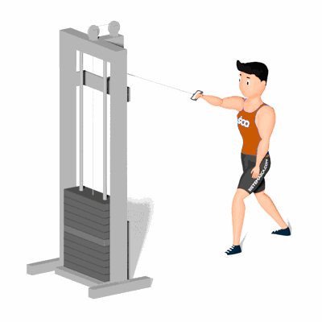

Remada Unilateral Na Polia Alta

Esse exercício é realizado de forma unilateral e trabalha o fortalecimento da região das costas, com ênfase ao músculo grande dorsal.
Ficha Técnica
Tipo: Musculação
Grupo Muscular: Costas
Aparelho: Nenhum
Músculos: Nenhum
Como realizar
- Fique com as bases trocadas, por exemplo, a perna esquerda à frente enquanto o braço direito executa o exercício;
- Fazer uma flexão de cotovelo, seguida de extensão, com a pegada semipronada, em que o dorso da mão fica virado para fora;
- Após concluir o exercício com o braço direito, portanto, executá-lo com o esquerdo.
 RC STORE
RC STORE